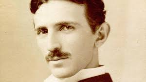

Nikola Tesla
La Storia
Nikola Tesla è stato un inventore, ingegnere elettrico e
fisico di origini serbo-statunitensi, nato il 10 luglio del 1856 a Smiljan,
in Croazia.
.È considerato uno dei più grandi inventori della storia e
ha contribuito in modo significativo allo sviluppo
della tecnologia elettrica.
Giovinezza e Istruzione
Tesla studiò ingegneria elettrica alla Technical University di Graz, in Austria, e successivamente all'Università Carolina a Praga. Dopo aver lavorato in diverse aziende in Europa, si trasferì negli Stati Uniti nel 1884.
Tesla studiò ingegneria elettrica alla Technical University di Graz, in Austria, e successivamente all'Università Carolina a Praga. Dopo aver lavorato in diverse aziende in Europa, si trasferì negli Stati Uniti nel 1884.
Collaborazione con Edison e Guerra delle Correnti
Inizialmente collaborò con Thomas Edison, ma i due ebbero divergenze
sulla tecnologia elettrica, dando inizio alla cosiddetta
"guerra delle correnti" tra il sistema a corrente continua di Edison e
il sistema a corrente alternata di Tesla.
Wardenclyffe Tower e Fallimento FinanziarioTesla intraprese il progetto della Wardenclyffe
Tower per la trasmissione senza fili di energia,
ma a causa di problemi finanziari, il progetto fu abbandonato e Tesla affrontò
difficoltà economiche.

Vita Personale e MorteTesla trascorse gli ultimi
anni della sua vita in relativa oscurità e
morì il 7 gennaio 1943 a New York. Nonostante la sua genialità,
Tesla non fu sempre riconosciuto o ricompensato adeguatamente durante la sua vita.
Le Invenzioni
Sistema a Corrente Alternata (AC)Tesla sviluppò e promosse
il sistema a corrente alternata, che si rivelò più efficiente per la trasmissione di energia su lunghe distanze
rispetto al sistema a corrente continua. Questa invenzione
fu cruciale per l'elettrificazione del mondo moderno.
Motore a Induzione a Corrente AlternataTesla
progettò e brevetto il motore a induzione a
corrente alternata, un dispositivo che ha contribuito in modo significativo
alla trasformazione dell'energia elettrica in lavoro meccanico.
Trasformatore TeslaIl trasformatore
Tesla è un tipo specifico di trasformatore ad alta frequenza che ha molteplici applicazioni,
inclusa la trasmissione di energia elettrica senza fili.
Bobina di TeslaLa bobina di Tesla è un dispositivo che genera
tensioni molto elevate ad alta frequenza. Anche se originariamente sviluppata per la trasmissione senza fili,
la bobina di Tesla è ora nota per le sue applicazioni nelle dimostrazioni scientifiche.
Sistema di Trasmissione di Energia Senza FiliTesla lavorò su un sistema per trasmettere
energia elettrica senza l'uso di fili, un concetto che non fu completamente realizzato ma che continua a ispirare la ricerca moderna
sulla trasmissione senza fili.